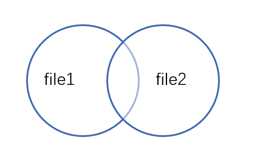

<!DOCTYPE html>


<html lang="zh-CN">


<head>
  <meta charset="utf-8" />
    
  <meta name="viewport" content="width=device-width, initial-scale=1, maximum-scale=1" />
  <title>
    以某列作为主键比对两个文件内容代码实现 |  VincereZhou&#39;s blog
  </title>
  <meta name="generator" content="hexo-theme-ayer">
  
  <link rel="shortcut icon" href="/images/mojie.jpg" />
  
  
<link rel="stylesheet" href="/dist/main.css">

  <link rel="stylesheet" href="https://cdn.jsdelivr.net/gh/Shen-Yu/cdn/css/remixicon.min.css">
  
<link rel="stylesheet" href="/css/custom.css">

  
  <script src="https://cdn.jsdelivr.net/npm/pace-js@1.0.2/pace.min.js"></script>
  
  

  

<link rel="alternate" href="/atom.xml" title="VincereZhou's blog" type="application/atom+xml">
</head>

</html>

<body>
  <div id="app">
    
      
    <main class="content on">
      <section class="outer">
  <article
  id="post-以某列作为主键比对两个文件内容代码实现"
  class="article article-type-post"
  itemscope
  itemprop="blogPost"
  data-scroll-reveal
>
  <div class="article-inner">
    
    <header class="article-header">
       
<h1 class="article-title sea-center" style="border-left:0" itemprop="name">
  以某列作为主键比对两个文件内容代码实现
</h1>
 

    </header>
     
    <div class="article-meta">
      <a href="/posts/705b018f/" class="article-date">
  <time datetime="2021-09-17T03:21:09.000Z" itemprop="datePublished">2021-09-17</time>
</a> 
  <div class="article-category">
    <a class="article-category-link" href="/categories/%E6%95%B0%E6%8D%AE%E5%88%86%E6%9E%90/">数据分析</a> / <a class="article-category-link" href="/categories/%E6%95%B0%E6%8D%AE%E5%88%86%E6%9E%90/python/">python</a>
  </div>
  
<div class="word_count">
    <span class="post-time">
        <span class="post-meta-item-icon">
            <i class="ri-quill-pen-line"></i>
            <span class="post-meta-item-text"> 字数统计:</span>
            <span class="post-count">2.2k</span>
        </span>
    </span>

    <span class="post-time">
        &nbsp; | &nbsp;
        <span class="post-meta-item-icon">
            <i class="ri-book-open-line"></i>
            <span class="post-meta-item-text"> 阅读时长≈</span>
            <span class="post-count">10 分钟</span>
        </span>
    </span>
</div>
 
    </div>
      
    <div class="tocbot"></div>


  
    <div class="article-entry" itemprop="articleBody">
       
  <p>有的时候，你可能需要比较两个文件的<strong>实质内容</strong>是否一样，或者某一个文件的内容是否均包含在另一个文件，你可以看看本代码。</p>
<span id="more"></span>
<h1>前言</h1>
<p>这两天老得比对各种文件，比对我手上的数据和你手上的数据是否一致，比对上传的数据和计算用的数据是否一致等。但是之前用的一些比对文件的方法又不能很好地满足我的需求，总得手动各种弄，就写了这个小脚本。</p>
<p>我一般用的比对方式有三种，notpad++ 的 Compare 插件，Excel 的  Vlookup 函数 + 排序 + IF， linux 的 diff 命令。但是问题在于第一种和第三种主要用在两个文件行的排序一致的情况，而且也得肉眼去看比对结果。第二种用 Excel 倒是灵活，就是得手动各种弄，偶尔一次可以，经常这样做就废时间了。</p>
<h1>脚本逻辑</h1>
<p>这个脚本要求两个文件的<strong>列数相同</strong>，并且<strong>列的顺序也一样</strong>。两个文件指定以某一列作为主键（数据库的概念，主键不可以出现重复）。</p>
<p>首先比较两个文件的主键，画个韦恩图如下，最左边的部分表示只在第一个文件的主键，也就是只在第一个文件中的行（如果存在，则写入文件 only_in_file1.txt ），最右边同理 。中间重叠的部分就是两个文件共同的主键。</p>
<p></p>
<p>然后查看两个文件共同的主键部分，比对同一个主键在两个文件的行的内容是否一致，如果不一致，则将这两行内容写入到 diff_rows.txt 。</p>
<p>如果<strong>只在文件1中的行</strong>，<strong>只在文件2中的行</strong>，<strong>共同主键但是行内容不同的行</strong>，这三个<strong>均不存在</strong>，那就说明这<strong>两个文件在内容上完全一致</strong>。</p>
<h1>使用软件</h1>
<ul>
<li>python 3.8 及以上版本</li>
</ul>
<h1>输入文件格式</h1>
<p>文本格式</p>
<h1>输出文件格式</h1>
<p>如果两个文件存在不一致，那么可能出现这三个文件。</p>
<p><code>only_in_file1.txt</code> :  只在第一个文件出现的行</p>
<p><code>only_in_file2.txt</code> :  只在第二个文件出现的行</p>
<p><code>diff_rows.txt</code> : 两个文件主键相同但是行内容不一致的内容。</p>
<p>前两个文件就不用说了，唯一注意的地方是这三个文件文件分隔符用的都是tab，可能和输入文件的分隔符不一样。</p>
<p>第三个文件举个例子，见下方，前两行为一个不一致的地方，第一行为主键<code>YYLNWJ119077114</code>在第一个文件中的内容，第二行则为主键<code>YYLNWJ119077114</code>在第二个文件中的内容，可以看到这两行在最后一列内容不一致，第一个文件为 9，第二个文件为 -999 。第三行为空行，作为分隔。第四行和第五行是第二个不一致的地方。</p>
<figure class="highlight plain"><table><tr><td class="gutter"><pre><span class="line">1</span><br><span class="line">2</span><br><span class="line">3</span><br><span class="line">4</span><br><span class="line">5</span><br><span class="line">6</span><br></pre></td><td class="code"><pre><span class="line">YYLNWJ119077114	F	7	YYCFJYA1872471220191013	243.76	9</span><br><span class="line">YYLNWJ119077114	F	7	YYCFJYA1872471220191013	243.76	-999</span><br><span class="line"></span><br><span class="line">YYLNWJ119083106	F	8	YYCFJYA1874850920191031	193.26	9</span><br><span class="line">YYLNWJ119083106	F	8	YYCFJYA1874850920191031	193.26	-999</span><br><span class="line"></span><br></pre></td></tr></table></figure>
<h1>运行代码</h1>
<p>代码文件见: <a target="_blank" rel="noopener" href="https://github.com/VincereZhou/code_backup/blob/master/compair_two_files.py">compair_two_files.py</a></p>
<p>将两个需要比较的文件和本程序放在一个文件夹内，运行命令示范如下：</p>
<figure class="highlight shell"><table><tr><td class="gutter"><pre><span class="line">1</span><br></pre></td><td class="code"><pre><span class="line">python compair_two_files.py --file1 in_sz_phe --file2 out_sz_phe</span><br></pre></td></tr></table></figure>
<p><strong>参数说明</strong>：</p>
<p><code>--file1</code>: 第一个输入文件名称，必选</p>
<p><code>--file2</code>: 第二个输入文件名称，必选</p>
<p><code>--key-column</code>:  主键所在的列，可选，默认为 1，即默认第一列为主键</p>
<p><code>--file-separator</code>:  文件中的分隔符，可选，默认为空白字符。</p>
<h1>代码说明</h1>
<h2 id="输入参数，打印参数">输入参数，打印参数</h2>
<figure class="highlight python"><table><tr><td class="gutter"><pre><span class="line">1</span><br><span class="line">2</span><br><span class="line">3</span><br><span class="line">4</span><br><span class="line">5</span><br><span class="line">6</span><br><span class="line">7</span><br><span class="line">8</span><br><span class="line">9</span><br><span class="line">10</span><br><span class="line">11</span><br><span class="line">12</span><br><span class="line">13</span><br><span class="line">14</span><br><span class="line">15</span><br><span class="line">16</span><br><span class="line">17</span><br><span class="line">18</span><br><span class="line">19</span><br><span class="line">20</span><br><span class="line">21</span><br><span class="line">22</span><br><span class="line">23</span><br><span class="line">24</span><br><span class="line">25</span><br><span class="line">26</span><br><span class="line">27</span><br><span class="line">28</span><br><span class="line">29</span><br><span class="line">30</span><br><span class="line">31</span><br><span class="line">32</span><br><span class="line">33</span><br><span class="line">34</span><br><span class="line">35</span><br><span class="line">36</span><br><span class="line">37</span><br><span class="line">38</span><br><span class="line">39</span><br><span class="line">40</span><br><span class="line">41</span><br><span class="line">42</span><br><span class="line">43</span><br></pre></td><td class="code"><pre><span class="line"><span class="comment">#!/mnt/data/zhouziwen/bin/miniConda/miniconda3/bin/python</span></span><br><span class="line"><span class="comment">#coding=utf-8</span></span><br><span class="line"><span class="comment">#基于某列作为主键，比较两个文件的内容是否相同。</span></span><br><span class="line"></span><br><span class="line"></span><br><span class="line"><span class="keyword">import</span> argparse,os,sys,time</span><br><span class="line"></span><br><span class="line">parser = argparse.ArgumentParser(prog=<span class="string">&quot;compare_two_files&quot;</span>, description=<span class="string">&#x27;compare contents in two files when some column is set as key&#x27;</span>)</span><br><span class="line"></span><br><span class="line"><span class="comment"># 添加参数步骤，如果不提供参数，那个参数就是 None</span></span><br><span class="line">parser.add_argument(<span class="string">&#x27;-v&#x27;</span>, <span class="string">&#x27;--version&#x27;</span>, action=<span class="string">&#x27;version&#x27;</span>, version=<span class="string">&#x27;%(prog)s 1.0&#x27;</span>)</span><br><span class="line">parser.add_argument(<span class="string">&quot;--file1&quot;</span>, required=<span class="literal">True</span>, </span><br><span class="line">    <span class="built_in">help</span>=<span class="string">&#x27;&#x27;&#x27;the first file&#x27;s name&#x27;&#x27;&#x27;</span>)</span><br><span class="line">parser.add_argument(<span class="string">&quot;--file2&quot;</span>, required=<span class="literal">True</span>, </span><br><span class="line">    <span class="built_in">help</span>=<span class="string">&#x27;&#x27;&#x27;the second file&#x27;s name&#x27;&#x27;&#x27;</span>)</span><br><span class="line">parser.add_argument(<span class="string">&quot;--key-column&quot;</span>, required=<span class="literal">False</span>, default = <span class="string">&quot;1&quot;</span>,</span><br><span class="line">    <span class="built_in">help</span>=<span class="string">&#x27;&#x27;&#x27;the column index to set as key, default is 1, means first column&#x27;&#x27;&#x27;</span>)</span><br><span class="line">parser.add_argument(<span class="string">&quot;--file-separator&quot;</span>, required=<span class="literal">False</span>,</span><br><span class="line">    <span class="built_in">help</span>=<span class="string">&#x27;&#x27;&#x27;separator of two files, default is backspace or tab&#x27;&#x27;&#x27;</span>)</span><br><span class="line"></span><br><span class="line">args = parser.parse_args()</span><br><span class="line"></span><br><span class="line"><span class="comment">#打印软件版本</span></span><br><span class="line"><span class="built_in">print</span>(<span class="string">&quot; ---------------------------------------------&quot;</span>)</span><br><span class="line"><span class="built_in">print</span>(<span class="string">&quot;|             compare_two_files.py            |&quot;</span>)</span><br><span class="line"><span class="built_in">print</span>(<span class="string">&quot;|                                             |&quot;</span>)</span><br><span class="line"><span class="built_in">print</span>(<span class="string">&quot;|             2021 - Version 1.0              |&quot;</span>)</span><br><span class="line"><span class="built_in">print</span>(<span class="string">&quot;|          (lase update: Sept 16, 2021)       |&quot;</span>)</span><br><span class="line"><span class="built_in">print</span>(<span class="string">&quot;|             Compass, Beijing                |&quot;</span>)</span><br><span class="line"><span class="built_in">print</span>(<span class="string">&quot; ---------------------------------------------\n&quot;</span>)</span><br><span class="line"></span><br><span class="line"><span class="comment">#打印开始时间</span></span><br><span class="line">begin_time = time.strftime(<span class="string">&quot;%Y-%m-%d %H:%M:%S&quot;</span>, time.localtime())</span><br><span class="line"><span class="built_in">print</span>(<span class="string">&quot;Start time: &#123;&#125;\n&quot;</span>.<span class="built_in">format</span>(begin_time)) </span><br><span class="line"></span><br><span class="line"></span><br><span class="line"><span class="comment">#打印所有参数        </span></span><br><span class="line"><span class="built_in">print</span>(<span class="string">&quot;Arguments\n&quot;</span>)</span><br><span class="line"><span class="built_in">print</span>(<span class="string">&quot;  --file1 &#123;&#125;\n&quot;</span>.<span class="built_in">format</span>(args.file1))</span><br><span class="line"><span class="built_in">print</span>(<span class="string">&quot;  --file2 &#123;&#125;\n&quot;</span>.<span class="built_in">format</span>(args.file2))</span><br><span class="line"><span class="built_in">print</span>(<span class="string">&quot;  --key-column &#123;&#125;\n&quot;</span>.<span class="built_in">format</span>(args.key_column))</span><br><span class="line"><span class="built_in">print</span>(<span class="string">&quot;  --file-separator &#123;&#125;\n&quot;</span>.<span class="built_in">format</span>(args.file_separator))</span><br><span class="line"></span><br></pre></td></tr></table></figure>
<h2 id="检验参数">检验参数</h2>
<p>检验两个文件是否存在且非空，两个文件的列数是否相同，主键是否为数字且在列数的范围内。如果存在问题，报错退出</p>
<figure class="highlight python"><table><tr><td class="gutter"><pre><span class="line">1</span><br><span class="line">2</span><br><span class="line">3</span><br><span class="line">4</span><br><span class="line">5</span><br><span class="line">6</span><br><span class="line">7</span><br><span class="line">8</span><br><span class="line">9</span><br><span class="line">10</span><br><span class="line">11</span><br><span class="line">12</span><br><span class="line">13</span><br><span class="line">14</span><br><span class="line">15</span><br><span class="line">16</span><br><span class="line">17</span><br><span class="line">18</span><br><span class="line">19</span><br><span class="line">20</span><br><span class="line">21</span><br><span class="line">22</span><br><span class="line">23</span><br><span class="line">24</span><br><span class="line">25</span><br><span class="line">26</span><br><span class="line">27</span><br><span class="line">28</span><br><span class="line">29</span><br><span class="line">30</span><br><span class="line">31</span><br><span class="line">32</span><br><span class="line">33</span><br><span class="line">34</span><br><span class="line">35</span><br><span class="line">36</span><br><span class="line">37</span><br><span class="line">38</span><br><span class="line">39</span><br><span class="line">40</span><br><span class="line">41</span><br></pre></td><td class="code"><pre><span class="line"><span class="comment">#检验参数</span></span><br><span class="line">error_status = <span class="literal">False</span> <span class="comment"># 错误逻辑值</span></span><br><span class="line"></span><br><span class="line"><span class="function"><span class="keyword">def</span> <span class="title">Judge_file</span>(<span class="params">file_path</span>):</span></span><br><span class="line">    <span class="keyword">import</span> os</span><br><span class="line">    <span class="keyword">if</span> os.path.exists(file_path):</span><br><span class="line">        <span class="keyword">if</span> os.path.getsize(file_path):</span><br><span class="line">            <span class="keyword">return</span> <span class="literal">True</span></span><br><span class="line">    <span class="keyword">return</span> <span class="literal">False</span></span><br><span class="line"></span><br><span class="line"><span class="function"><span class="keyword">def</span> <span class="title">is_int</span>(<span class="params">s</span>):</span></span><br><span class="line">    <span class="keyword">try</span>:</span><br><span class="line">        <span class="built_in">int</span>(s)</span><br><span class="line">        <span class="keyword">return</span> <span class="literal">True</span></span><br><span class="line">    <span class="keyword">except</span> ValueError:</span><br><span class="line">    	<span class="keyword">return</span> <span class="literal">False</span></span><br><span class="line"></span><br><span class="line"><span class="comment"># 检查文件是否存在且非空</span></span><br><span class="line"><span class="keyword">if</span> <span class="keyword">not</span> Judge_file(args.file1):</span><br><span class="line">    <span class="built_in">print</span>(<span class="string">f&quot;Error: <span class="subst">&#123;args.file1&#125;</span> not exists or is empty file\n\n&quot;</span>)</span><br><span class="line">    sys.exit(<span class="number">1</span>)</span><br><span class="line">    </span><br><span class="line"><span class="keyword">if</span> <span class="keyword">not</span> Judge_file(args.file2):</span><br><span class="line">    <span class="built_in">print</span>(<span class="string">f&quot;Error: <span class="subst">&#123;args.file2&#125;</span> not exists or is empty file\n\n&quot;</span>)</span><br><span class="line">    sys.exit(<span class="number">1</span>)</span><br><span class="line"></span><br><span class="line"><span class="comment"># 检查两个文件第一行列数是否相同</span></span><br><span class="line">file1 = <span class="built_in">open</span>(args.file1,<span class="string">&#x27;r&#x27;</span>)</span><br><span class="line">file2 = <span class="built_in">open</span>(args.file2,<span class="string">&#x27;r&#x27;</span>)</span><br><span class="line"></span><br><span class="line">file1_column = <span class="built_in">len</span>(file1.readline().split(args.file_separator))</span><br><span class="line">file2_column = <span class="built_in">len</span>(file2.readline().split(args.file_separator))</span><br><span class="line"></span><br><span class="line"><span class="keyword">if</span> file1_column != file2_column:</span><br><span class="line">    <span class="built_in">print</span>(<span class="string">&quot;Error: file1 and file2 has different columns in first row&quot;</span>)</span><br><span class="line">    sys.exit(<span class="number">1</span>)</span><br><span class="line"></span><br><span class="line"><span class="keyword">if</span> (<span class="keyword">not</span> is_int(args.key_column)) <span class="keyword">or</span> (<span class="built_in">int</span>(args.key_column) &lt; <span class="number">0</span>) <span class="keyword">or</span> (<span class="built_in">int</span>(args.key_column) &gt; file1_column):</span><br><span class="line">    <span class="built_in">print</span>(<span class="string">&quot;Error: --key-column is not integer or out of columns range&quot;</span>)</span><br><span class="line">    sys.exit(<span class="number">1</span>)</span><br><span class="line"></span><br></pre></td></tr></table></figure>
<h2 id="检查文件">检查文件</h2>
<h3 id="第一个文件">第一个文件</h3>
<p>对于每一行判断列数，判断整行内容是否重复，判断主键是否重复，将内容写入到 dict1 中。</p>
<figure class="highlight python"><table><tr><td class="gutter"><pre><span class="line">1</span><br><span class="line">2</span><br><span class="line">3</span><br><span class="line">4</span><br><span class="line">5</span><br><span class="line">6</span><br><span class="line">7</span><br><span class="line">8</span><br><span class="line">9</span><br><span class="line">10</span><br><span class="line">11</span><br><span class="line">12</span><br><span class="line">13</span><br><span class="line">14</span><br><span class="line">15</span><br><span class="line">16</span><br><span class="line">17</span><br><span class="line">18</span><br><span class="line">19</span><br><span class="line">20</span><br><span class="line">21</span><br><span class="line">22</span><br><span class="line">23</span><br><span class="line">24</span><br><span class="line">25</span><br><span class="line">26</span><br><span class="line">27</span><br><span class="line">28</span><br></pre></td><td class="code"><pre><span class="line"><span class="comment"># 检查文件</span></span><br><span class="line">file1.seek(<span class="number">0</span>)</span><br><span class="line">file2.seek(<span class="number">0</span>)</span><br><span class="line"></span><br><span class="line">key_index = <span class="built_in">int</span>(args.key_column) - <span class="number">1</span></span><br><span class="line"></span><br><span class="line">j = <span class="number">0</span></span><br><span class="line">temp_id_set = <span class="built_in">set</span>()</span><br><span class="line">temp_line_set = <span class="built_in">set</span>()</span><br><span class="line">dict1 = &#123;&#125;</span><br><span class="line"><span class="keyword">for</span> i <span class="keyword">in</span> file1:</span><br><span class="line">    j += <span class="number">1</span></span><br><span class="line">    f = i.split()</span><br><span class="line">    <span class="keyword">if</span> (<span class="built_in">len</span>(f) == file1_column):</span><br><span class="line">        <span class="keyword">if</span> <span class="string">&#x27;\t&#x27;</span>.join(f) <span class="keyword">not</span> <span class="keyword">in</span> temp_line_set:</span><br><span class="line">            temp_line_set.add(<span class="string">&#x27;\t&#x27;</span>.join(f))</span><br><span class="line">            <span class="keyword">if</span> f[key_index] <span class="keyword">not</span> <span class="keyword">in</span> temp_id_set:</span><br><span class="line">                temp_id_set.add(f[key_index])</span><br><span class="line">                dict1[f[key_index]] = <span class="string">&#x27;\t&#x27;</span>.join(f) <span class="comment"># 键：行内容</span></span><br><span class="line">            <span class="keyword">else</span>:</span><br><span class="line">                <span class="built_in">print</span>(<span class="string">f&quot;Error: duplicated id <span class="subst">&#123;f[key_index]&#125;</span> in different rows in file1\n&quot;</span>) </span><br><span class="line">                error_status = <span class="literal">True</span></span><br><span class="line">        <span class="keyword">else</span>:</span><br><span class="line">            <span class="built_in">print</span>(<span class="string">f&quot;Waring: duplicted row <span class="subst">&#123;j&#125;</span> in file1\n&quot;</span>)</span><br><span class="line">    <span class="keyword">else</span>:</span><br><span class="line">        <span class="built_in">print</span>(<span class="string">f&quot;Error: <span class="subst">&#123;j&#125;</span> row in file1 has less or more than <span class="subst">&#123;file1_column&#125;</span> columns\n&quot;</span>)</span><br><span class="line">        error_status = <span class="literal">True</span></span><br><span class="line"></span><br></pre></td></tr></table></figure>
<h3 id="第二个文件">第二个文件</h3>
<p>正常检查同一个文件，判断第二个文件的主键是否在第一个文件中，将共同主键的行内容写入到 dict2 ，将只在第二个文件的行内容写入到 only_in_file2_list 。</p>
<figure class="highlight python"><table><tr><td class="gutter"><pre><span class="line">1</span><br><span class="line">2</span><br><span class="line">3</span><br><span class="line">4</span><br><span class="line">5</span><br><span class="line">6</span><br><span class="line">7</span><br><span class="line">8</span><br><span class="line">9</span><br><span class="line">10</span><br><span class="line">11</span><br><span class="line">12</span><br><span class="line">13</span><br><span class="line">14</span><br><span class="line">15</span><br><span class="line">16</span><br><span class="line">17</span><br><span class="line">18</span><br><span class="line">19</span><br><span class="line">20</span><br><span class="line">21</span><br><span class="line">22</span><br><span class="line">23</span><br><span class="line">24</span><br><span class="line">25</span><br></pre></td><td class="code"><pre><span class="line">j = <span class="number">0</span></span><br><span class="line">temp_id_set = <span class="built_in">set</span>()</span><br><span class="line">temp_line_set = <span class="built_in">set</span>()</span><br><span class="line">dict2 = &#123;&#125;</span><br><span class="line">only_in_file2_list = [] <span class="comment"># 只在 file2 中的键的内容</span></span><br><span class="line"><span class="keyword">for</span> i <span class="keyword">in</span> file2:</span><br><span class="line">    j += <span class="number">1</span></span><br><span class="line">    f = i.split()</span><br><span class="line">    <span class="keyword">if</span> (<span class="built_in">len</span>(f) == file2_column):</span><br><span class="line">        <span class="keyword">if</span> <span class="string">&#x27;\t&#x27;</span>.join(f) <span class="keyword">not</span> <span class="keyword">in</span> temp_line_set:</span><br><span class="line">            temp_line_set.add(<span class="string">&#x27;\t&#x27;</span>.join(f))</span><br><span class="line">            <span class="keyword">if</span> f[key_index] <span class="keyword">not</span> <span class="keyword">in</span> temp_id_set:</span><br><span class="line">                temp_id_set.add(f[key_index])</span><br><span class="line">                <span class="keyword">if</span> f[key_index] <span class="keyword">in</span> dict1:</span><br><span class="line">                    dict2[f[key_index]] = <span class="string">&#x27;\t&#x27;</span>.join(f) <span class="comment"># 共同的键：第二个文件行内容</span></span><br><span class="line">                <span class="keyword">else</span>:</span><br><span class="line">                    only_in_file2_list.append(<span class="string">&#x27;\t&#x27;</span>.join(f)+<span class="string">&#x27;\n&#x27;</span>)</span><br><span class="line">            <span class="keyword">else</span>:</span><br><span class="line">                <span class="built_in">print</span>(<span class="string">f&quot;Error: duplicated id <span class="subst">&#123;f[key_index]&#125;</span> in different rows in file2\n&quot;</span>) </span><br><span class="line">                error_status = <span class="literal">True</span></span><br><span class="line">        <span class="keyword">else</span>:</span><br><span class="line">            <span class="built_in">print</span>(<span class="string">f&quot;Waring: duplicted row <span class="subst">&#123;j&#125;</span> in file2\n&quot;</span>)</span><br><span class="line">    <span class="keyword">else</span>:</span><br><span class="line">        <span class="built_in">print</span>(<span class="string">f&quot;Error: <span class="subst">&#123;j&#125;</span> row in file2 has less or more than <span class="subst">&#123;file2_column&#125;</span> columns\n&quot;</span>)</span><br><span class="line">        error_status = <span class="literal">True</span></span><br></pre></td></tr></table></figure>
<p>这两个打开的文件用不到了，记得关闭</p>
<figure class="highlight python"><table><tr><td class="gutter"><pre><span class="line">1</span><br><span class="line">2</span><br></pre></td><td class="code"><pre><span class="line">file1.close()</span><br><span class="line">file2.close()</span><br></pre></td></tr></table></figure>
<p>如果这两个文件内容有问题，程序中止</p>
<figure class="highlight python"><table><tr><td class="gutter"><pre><span class="line">1</span><br><span class="line">2</span><br></pre></td><td class="code"><pre><span class="line"><span class="keyword">if</span> error_status:</span><br><span class="line">    sys.exit(<span class="number">1</span>)</span><br></pre></td></tr></table></figure>
<h3 id="提取只在第一个文件中的主键的行">提取只在第一个文件中的主键的行</h3>
<p>上面已经提取了只在第二个文件中的行的内容，这里就提取只在第一个文件的内容，写入 only_in_file1_list</p>
<figure class="highlight python"><table><tr><td class="gutter"><pre><span class="line">1</span><br><span class="line">2</span><br><span class="line">3</span><br><span class="line">4</span><br><span class="line">5</span><br><span class="line">6</span><br></pre></td><td class="code"><pre><span class="line">only_in_file1_list = [] <span class="comment"># 只在 file1 中的键的内容</span></span><br><span class="line"></span><br><span class="line"><span class="keyword">for</span> i <span class="keyword">in</span> dict1:</span><br><span class="line">    <span class="keyword">if</span> i <span class="keyword">not</span> <span class="keyword">in</span> dict2:</span><br><span class="line">        only_in_file1_list.append(dict1[i]+<span class="string">&#x27;\n&#x27;</span>)</span><br><span class="line"></span><br></pre></td></tr></table></figure>
<h3 id="比较共同主键的行">比较共同主键的行</h3>
<p>比较两个文件共同主键的行的内容是否一致</p>
<figure class="highlight python"><table><tr><td class="gutter"><pre><span class="line">1</span><br><span class="line">2</span><br><span class="line">3</span><br><span class="line">4</span><br><span class="line">5</span><br><span class="line">6</span><br><span class="line">7</span><br><span class="line">8</span><br><span class="line">9</span><br><span class="line">10</span><br><span class="line">11</span><br><span class="line">12</span><br><span class="line">13</span><br></pre></td><td class="code"><pre><span class="line"><span class="comment"># 比较共同key的行</span></span><br><span class="line">same_common_key_num = <span class="number">0</span></span><br><span class="line">diff_common_key_num = <span class="number">0</span></span><br><span class="line">diff_rows_list = [] <span class="comment"># 不一致行的内容</span></span><br><span class="line"></span><br><span class="line"><span class="keyword">for</span> i <span class="keyword">in</span> dict2:</span><br><span class="line">    <span class="keyword">if</span> dict1[i] == dict2[i]:</span><br><span class="line">        same_common_key_num += <span class="number">1</span></span><br><span class="line">    <span class="keyword">else</span>:</span><br><span class="line">        diff_common_key_num += <span class="number">1</span></span><br><span class="line">        diff_rows_list.append(dict1[i]+<span class="string">&#x27;\n&#x27;</span>)</span><br><span class="line">        diff_rows_list.append(dict2[i]+<span class="string">&#x27;\n\n&#x27;</span>)</span><br><span class="line"></span><br></pre></td></tr></table></figure>
<h2 id="综合判断">综合判断</h2>
<p>结合上述内容，综合判断，如果完全一致则打印退出。如果存在不一致，将不一致的地方写入文件。</p>
<figure class="highlight python"><table><tr><td class="gutter"><pre><span class="line">1</span><br><span class="line">2</span><br><span class="line">3</span><br><span class="line">4</span><br><span class="line">5</span><br><span class="line">6</span><br><span class="line">7</span><br><span class="line">8</span><br><span class="line">9</span><br><span class="line">10</span><br><span class="line">11</span><br><span class="line">12</span><br><span class="line">13</span><br><span class="line">14</span><br><span class="line">15</span><br><span class="line">16</span><br><span class="line">17</span><br><span class="line">18</span><br><span class="line">19</span><br><span class="line">20</span><br><span class="line">21</span><br><span class="line">22</span><br><span class="line">23</span><br><span class="line">24</span><br><span class="line">25</span><br></pre></td><td class="code"><pre><span class="line"><span class="keyword">if</span> (<span class="built_in">len</span>(only_in_file1_list) == <span class="number">0</span>) <span class="keyword">and</span> (<span class="built_in">len</span>(only_in_file2_list) == <span class="number">0</span>) <span class="keyword">and</span> (diff_common_key_num == <span class="number">0</span>):</span><br><span class="line">    <span class="built_in">print</span>(<span class="string">&quot;Congratulations: two files are same in contents&quot;</span>)</span><br><span class="line">    sys.exit(<span class="number">0</span>)</span><br><span class="line"><span class="keyword">else</span>:</span><br><span class="line">    <span class="built_in">print</span>(<span class="string">f&quot;rows only in file1 : <span class="subst">&#123;<span class="built_in">len</span>(only_in_file1_list)&#125;</span>\n&quot;</span>)</span><br><span class="line">    <span class="built_in">print</span>(<span class="string">f&quot;rows only in file2 : <span class="subst">&#123;<span class="built_in">len</span>(only_in_file2_list)&#125;</span>\n&quot;</span>)</span><br><span class="line">    <span class="built_in">print</span>(<span class="string">f&quot;same rows in two files: <span class="subst">&#123;same_common_key_num&#125;</span>\n&quot;</span>)</span><br><span class="line">    <span class="built_in">print</span>(<span class="string">f&quot;different rows in two files: <span class="subst">&#123;diff_common_key_num&#125;</span>\n&quot;</span>)</span><br><span class="line">    </span><br><span class="line">    <span class="comment"># 写入文件</span></span><br><span class="line">    <span class="keyword">if</span> only_in_file1_list:</span><br><span class="line">        only_in_file1 = <span class="built_in">open</span>(<span class="string">&quot;only_in_file1.txt&quot;</span>,<span class="string">&#x27;w&#x27;</span>)</span><br><span class="line">        only_in_file1.writelines(only_in_file1_list)</span><br><span class="line">        only_in_file1.close()</span><br><span class="line"></span><br><span class="line">    <span class="keyword">if</span> only_in_file2_list:</span><br><span class="line">        only_in_file2 = <span class="built_in">open</span>(<span class="string">&quot;only_in_file2.txt&quot;</span>,<span class="string">&#x27;w&#x27;</span>)</span><br><span class="line">        only_in_file2.writelines(only_in_file2_list)</span><br><span class="line">        only_in_file2.close()</span><br><span class="line"></span><br><span class="line">    <span class="keyword">if</span> diff_rows_list:</span><br><span class="line">        diff_rows_file = <span class="built_in">open</span>(<span class="string">&quot;diff_rows.txt&quot;</span>,<span class="string">&#x27;w&#x27;</span>)</span><br><span class="line">        diff_rows_file.writelines(diff_rows_list)</span><br><span class="line">        diff_rows_file.close()</span><br><span class="line"></span><br></pre></td></tr></table></figure> 
      <!-- reward -->
      
    </div>
    

    <!-- copyright -->
    
    <div class="declare">
      <ul class="post-copyright">
        <li>
          <i class="ri-copyright-line"></i>
          <strong>版权声明： </strong>
          
          本博客所有文章除特别声明外，著作权归作者所有。转载请注明出处！
          
        </li>
      </ul>
    </div>
    
    <footer class="article-footer">
       
<div class="share-btn">
      <span class="share-sns share-outer">
        <i class="ri-share-forward-line"></i>
        分享
      </span>
      <div class="share-wrap">
        <i class="arrow"></i>
        <div class="share-icons">
          
          <a class="weibo share-sns" href="javascript:;" data-type="weibo">
            <i class="ri-weibo-fill"></i>
          </a>
          <a class="weixin share-sns wxFab" href="javascript:;" data-type="weixin">
            <i class="ri-wechat-fill"></i>
          </a>
          <a class="qq share-sns" href="javascript:;" data-type="qq">
            <i class="ri-qq-fill"></i>
          </a>
          <a class="douban share-sns" href="javascript:;" data-type="douban">
            <i class="ri-douban-line"></i>
          </a>
          <!-- <a class="qzone share-sns" href="javascript:;" data-type="qzone">
            <i class="icon icon-qzone"></i>
          </a> -->
          
          <a class="facebook share-sns" href="javascript:;" data-type="facebook">
            <i class="ri-facebook-circle-fill"></i>
          </a>
          <a class="twitter share-sns" href="javascript:;" data-type="twitter">
            <i class="ri-twitter-fill"></i>
          </a>
          <a class="google share-sns" href="javascript:;" data-type="google">
            <i class="ri-google-fill"></i>
          </a>
        </div>
      </div>
</div>

<div class="wx-share-modal">
    <a class="modal-close" href="javascript:;"><i class="ri-close-circle-line"></i></a>
    <p>扫一扫，分享到微信</p>
    <div class="wx-qrcode">
      
    </div>
</div>

<div id="share-mask"></div>  
  <ul class="article-tag-list" itemprop="keywords"><li class="article-tag-list-item"><a class="article-tag-list-link" href="/tags/%E6%95%B0%E6%8D%AE%E5%88%86%E6%9E%90/" rel="tag">数据分析</a></li></ul>

    </footer>
  </div>

   
  <nav class="article-nav">
    
      <a href="/posts/a473f09a/" class="article-nav-link">
        <strong class="article-nav-caption">上一篇</strong>
        <div class="article-nav-title">
          
            吴恩达机器学习笔记
          
        </div>
      </a>
    
    
      <a href="/posts/9ad0a746/" class="article-nav-link">
        <strong class="article-nav-caption">下一篇</strong>
        <div class="article-nav-title">基于两个plink文件共同样本共同位点的基因型比对代码实现</div>
      </a>
    
  </nav>

  
   
     
</article>

</section>
      <footer class="footer">
  <div class="outer">
    <ul>
      <li>
        Copyrights &copy;
        2019-2021
        <i class="ri-heart-fill heart_icon"></i> Vincere Zhou
      </li>
    </ul>
    <ul>
      <li>
        
        
        <span>
  <span><i class="ri-user-3-fill"></i>访问人数:<span id="busuanzi_value_site_uv"></span></s>
  <span class="division">|</span>
  <span><i class="ri-eye-fill"></i>浏览次数:<span id="busuanzi_value_page_pv"></span></span>
</span>
        
      </li>
    </ul>
    <ul>
      
    </ul>
    <ul>
      
    </ul>
    <ul>
      <li>
        <!-- cnzz统计 -->
        
      </li>
    </ul>

    <!-- 与只只在一起天数 -->
	<ul>
		<li><span id="lovetime_span"></span></li>
	</ul>
    <script type="text/javascript">			
        function show_runtime() {
            window.setTimeout("show_runtime()", 1000);
            X = new Date("03/04/2021 22:11:00");
            Y = new Date();
            T = (Y.getTime() - X.getTime());
            M = 24 * 60 * 60 * 1000;
            a = T / M;
            A = Math.floor(a);
            b = (a - A) * 24;
            B = Math.floor(b);
            c = (b - B) * 60;
            C = Math.floor((b - B) * 60);
            D = Math.floor((c - C) * 60);
            lovetime_span.innerHTML = "只只和男朋友在一起了 " + A + "天" + B + "小时" + C + "分" + D + "秒"
        }
        show_runtime();
    </script>

  </div>
</footer>
      <div class="float_btns">
        <div class="totop" id="totop">
  <i class="ri-arrow-up-line"></i>
</div>

<div class="todark" id="todark">
  <i class="ri-moon-line"></i>
</div>

      </div>
    </main>
    <aside class="sidebar on">
      <button class="navbar-toggle"></button>
<nav class="navbar">
  
  <div class="logo">
    <a href="/"></a>
  </div>
  
  <ul class="nav nav-main">
    
    <li class="nav-item">
      <a class="nav-item-link" href="/">主页</a>
    </li>
    
    <li class="nav-item">
      <a class="nav-item-link" href="/archives">归档</a>
    </li>
    
    <li class="nav-item">
      <a class="nav-item-link" href="/categories">分类</a>
    </li>
    
    <li class="nav-item">
      <a class="nav-item-link" href="/tags">标签</a>
    </li>
    
    <li class="nav-item">
      <a class="nav-item-link" href="/friends">友链</a>
    </li>
    
    <li class="nav-item">
      <a class="nav-item-link" href="/posts/ac7827ff">只只</a>
    </li>
    
    <li class="nav-item">
      <a class="nav-item-link" href="/about">关于</a>
    </li>
    
  </ul>
</nav>
<nav class="navbar navbar-bottom">
  <ul class="nav">
    <li class="nav-item">
      
      <a class="nav-item-link nav-item-search"  title="搜索">
        <i class="ri-search-line"></i>
      </a>
      
      
      <a class="nav-item-link" target="_blank" href="/atom.xml" title="RSS Feed">
        <i class="ri-rss-line"></i>
      </a>
      
    </li>
  </ul>
</nav>
<div class="search-form-wrap">
  <div class="local-search local-search-plugin">
  <input type="search" id="local-search-input" class="local-search-input" placeholder="Search...">
  <div id="local-search-result" class="local-search-result"></div>
</div>
</div>
    </aside>
    <script>
      if (window.matchMedia("(max-width: 768px)").matches) {
        document.querySelector('.content').classList.remove('on');
        document.querySelector('.sidebar').classList.remove('on');
      }
    </script>
    <div id="mask"></div>

<!-- #reward -->
<div id="reward">
  <span class="close"><i class="ri-close-line"></i></span>
  <p class="reward-p"><i class="ri-cup-line"></i>请我喝杯咖啡吧~</p>
  <div class="reward-box">
    
    <div class="reward-item">
      
      <span class="reward-type">支付宝</span>
    </div>
    
    
    <div class="reward-item">
      
      <span class="reward-type">微信</span>
    </div>
    
  </div>
</div>
    
<script src="/js/jquery-2.0.3.min.js"></script>


<script src="/js/lazyload.min.js"></script>

<!-- Tocbot -->


<script src="/js/tocbot.min.js"></script>

<script>
  tocbot.init({
    tocSelector: '.tocbot',
    contentSelector: '.article-entry',
    headingSelector: 'h1, h2, h3, h4, h5, h6',
    hasInnerContainers: true,
    scrollSmooth: true,
    scrollContainer: 'main',
    positionFixedSelector: '.tocbot',
    positionFixedClass: 'is-position-fixed',
    fixedSidebarOffset: 'auto'
  });
</script>

<script src="https://cdn.jsdelivr.net/npm/jquery-modal@0.9.2/jquery.modal.min.js"></script>
<link rel="stylesheet" href="https://cdn.jsdelivr.net/npm/jquery-modal@0.9.2/jquery.modal.min.css">
<script src="https://cdn.jsdelivr.net/npm/justifiedGallery@3.7.0/dist/js/jquery.justifiedGallery.min.js"></script>

<script src="/dist/main.js"></script>

<!-- ImageViewer -->

<!-- Root element of PhotoSwipe. Must have class pswp. -->
<div class="pswp" tabindex="-1" role="dialog" aria-hidden="true">

    <!-- Background of PhotoSwipe. 
         It's a separate element as animating opacity is faster than rgba(). -->
    <div class="pswp__bg"></div>

    <!-- Slides wrapper with overflow:hidden. -->
    <div class="pswp__scroll-wrap">

        <!-- Container that holds slides. 
            PhotoSwipe keeps only 3 of them in the DOM to save memory.
            Don't modify these 3 pswp__item elements, data is added later on. -->
        <div class="pswp__container">
            <div class="pswp__item"></div>
            <div class="pswp__item"></div>
            <div class="pswp__item"></div>
        </div>

        <!-- Default (PhotoSwipeUI_Default) interface on top of sliding area. Can be changed. -->
        <div class="pswp__ui pswp__ui--hidden">

            <div class="pswp__top-bar">

                <!--  Controls are self-explanatory. Order can be changed. -->

                <div class="pswp__counter"></div>

                <button class="pswp__button pswp__button--close" title="Close (Esc)"></button>

                <button class="pswp__button pswp__button--share" style="display:none" title="Share"></button>

                <button class="pswp__button pswp__button--fs" title="Toggle fullscreen"></button>

                <button class="pswp__button pswp__button--zoom" title="Zoom in/out"></button>

                <!-- Preloader demo http://codepen.io/dimsemenov/pen/yyBWoR -->
                <!-- element will get class pswp__preloader--active when preloader is running -->
                <div class="pswp__preloader">
                    <div class="pswp__preloader__icn">
                        <div class="pswp__preloader__cut">
                            <div class="pswp__preloader__donut"></div>
                        </div>
                    </div>
                </div>
            </div>

            <div class="pswp__share-modal pswp__share-modal--hidden pswp__single-tap">
                <div class="pswp__share-tooltip"></div>
            </div>

            <button class="pswp__button pswp__button--arrow--left" title="Previous (arrow left)">
            </button>

            <button class="pswp__button pswp__button--arrow--right" title="Next (arrow right)">
            </button>

            <div class="pswp__caption">
                <div class="pswp__caption__center"></div>
            </div>

        </div>

    </div>

</div>

<link rel="stylesheet" href="https://cdn.jsdelivr.net/npm/photoswipe@4.1.3/dist/photoswipe.min.css">
<link rel="stylesheet" href="https://cdn.jsdelivr.net/npm/photoswipe@4.1.3/dist/default-skin/default-skin.min.css">
<script src="https://cdn.jsdelivr.net/npm/photoswipe@4.1.3/dist/photoswipe.min.js"></script>
<script src="https://cdn.jsdelivr.net/npm/photoswipe@4.1.3/dist/photoswipe-ui-default.min.js"></script>

<script>
    function viewer_init() {
        let pswpElement = document.querySelectorAll('.pswp')[0];
        let $imgArr = document.querySelectorAll(('.article-entry img:not(.reward-img)'))

        $imgArr.forEach(($em, i) => {
            $em.onclick = () => {
                // slider展开状态
                // todo: 这样不好，后面改成状态
                if (document.querySelector('.left-col.show')) return
                let items = []
                $imgArr.forEach(($em2, i2) => {
                    let img = $em2.getAttribute('data-idx', i2)
                    let src = $em2.getAttribute('data-target') || $em2.getAttribute('src')
                    let title = $em2.getAttribute('alt')
                    // 获得原图尺寸
                    const image = new Image()
                    image.src = src
                    items.push({
                        src: src,
                        w: image.width || $em2.width,
                        h: image.height || $em2.height,
                        title: title
                    })
                })
                var gallery = new PhotoSwipe(pswpElement, PhotoSwipeUI_Default, items, {
                    index: parseInt(i)
                });
                gallery.init()
            }
        })
    }
    viewer_init()
</script>

<!-- MathJax -->

<script type="text/x-mathjax-config">
  MathJax.Hub.Config({
      tex2jax: {
          inlineMath: [ ['$','$'], ["\\(","\\)"]  ],
          processEscapes: true,
          skipTags: ['script', 'noscript', 'style', 'textarea', 'pre', 'code']
      }
  });

  MathJax.Hub.Queue(function() {
      var all = MathJax.Hub.getAllJax(), i;
      for(i=0; i < all.length; i += 1) {
          all[i].SourceElement().parentNode.className += ' has-jax';
      }
  });
</script>

<script src="https://cdn.jsdelivr.net/npm/mathjax@2.7.6/unpacked/MathJax.js?config=TeX-AMS-MML_HTMLorMML"></script>
<script>
  var ayerConfig = {
    mathjax: true
  }
</script>

<!-- Katex -->

<!-- busuanzi  -->


<script src="/js/busuanzi-2.3.pure.min.js"></script>


<!-- ClickLove -->

<!-- ClickBoom1 -->

<!-- ClickBoom2 -->

<!-- CodeCopy -->


<link rel="stylesheet" href="/css/clipboard.css">

<script src="https://cdn.jsdelivr.net/npm/clipboard@2/dist/clipboard.min.js"></script>
<script>
  function wait(callback, seconds) {
    var timelag = null;
    timelag = window.setTimeout(callback, seconds);
  }
  !function (e, t, a) {
    var initCopyCode = function(){
      var copyHtml = '';
      copyHtml += '<button class="btn-copy" data-clipboard-snippet="">';
      copyHtml += '<i class="ri-file-copy-2-line"></i><span>COPY</span>';
      copyHtml += '</button>';
      $(".highlight .code pre").before(copyHtml);
      $(".article pre code").before(copyHtml);
      var clipboard = new ClipboardJS('.btn-copy', {
        target: function(trigger) {
          return trigger.nextElementSibling;
        }
      });
      clipboard.on('success', function(e) {
        let $btn = $(e.trigger);
        $btn.addClass('copied');
        let $icon = $($btn.find('i'));
        $icon.removeClass('ri-file-copy-2-line');
        $icon.addClass('ri-checkbox-circle-line');
        let $span = $($btn.find('span'));
        $span[0].innerText = 'COPIED';
        
        wait(function () { // 等待两秒钟后恢复
          $icon.removeClass('ri-checkbox-circle-line');
          $icon.addClass('ri-file-copy-2-line');
          $span[0].innerText = 'COPY';
        }, 2000);
      });
      clipboard.on('error', function(e) {
        e.clearSelection();
        let $btn = $(e.trigger);
        $btn.addClass('copy-failed');
        let $icon = $($btn.find('i'));
        $icon.removeClass('ri-file-copy-2-line');
        $icon.addClass('ri-time-line');
        let $span = $($btn.find('span'));
        $span[0].innerText = 'COPY FAILED';
        
        wait(function () { // 等待两秒钟后恢复
          $icon.removeClass('ri-time-line');
          $icon.addClass('ri-file-copy-2-line');
          $span[0].innerText = 'COPY';
        }, 2000);
      });
    }
    initCopyCode();
  }(window, document);
</script>


<!-- CanvasBackground -->


    
  </div>
<script src="/live2dw/lib/L2Dwidget.min.js?094cbace49a39548bed64abff5988b05"></script><script>L2Dwidget.init({"pluginRootPath":"live2dw/","pluginJsPath":"lib/","pluginModelPath":"assets/","tagMode":false,"debug":false,"model":{"jsonPath":"live2d-widget-model-wanko"},"display":{"position":"left","width":150,"height":300,"hOffset":80,"vOffset":-70},"mobile":{"show":false,"scale":0.5},"log":false});</script></body>

</html>